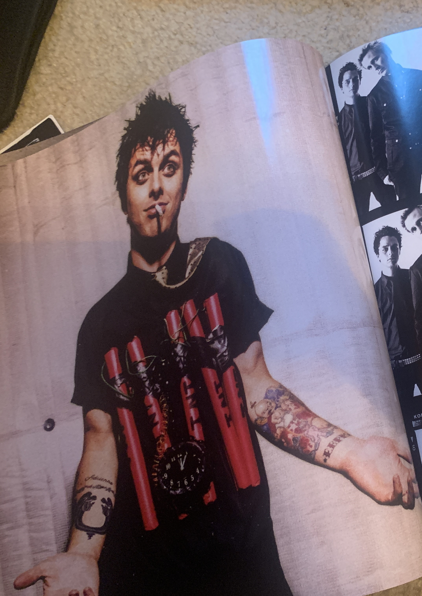
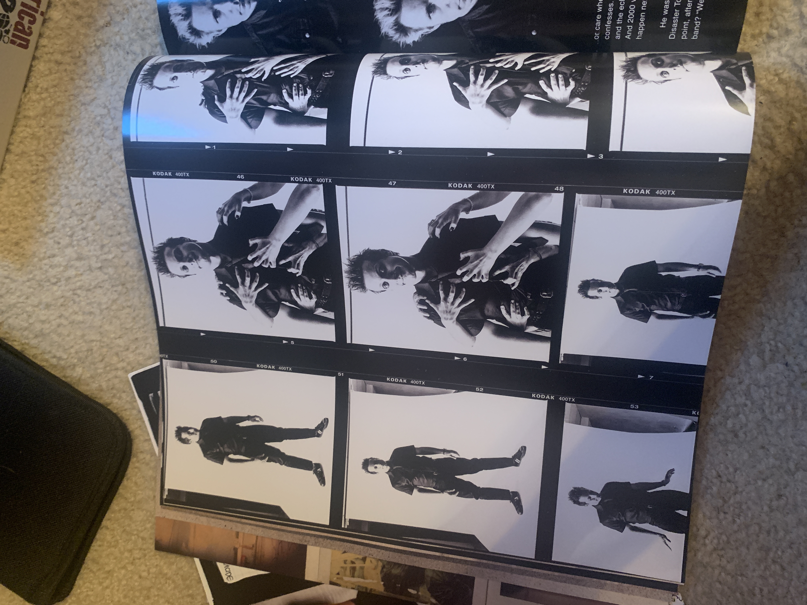

Shocking- It's Green Day
My favorite film is the American Idiot documentary that follows the creation of the American Idiot Broadway musical. I first watched it during covid in my directin class in highschool. We watched it as an introduction to our new project which focused on taking an album and creating a concept for a musical from it. I watched it again in college. Both times the film inspired me to create and perform again. It reminds me why I perform and especially helped to dig me out of the dark hole that covid was. This year American Idiot turned 20 and Green Day released a book telling the story of it's creation.
With turning 20 this year, many theatres are reviving the American
Idiot Broadway musical. One of the top theatre's I've seen doing it is
the Deaf West Theatre in Los Angeles, using both an interpreting cast
on the main stage and a vocal cast on a smaller upper stage area. The
set and costumes are fantastic with some performers doing both signing
and singing. It's also crazy that I'm older than the album by only 6
months.

